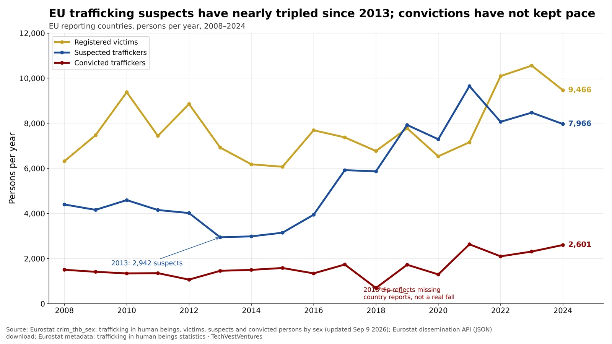
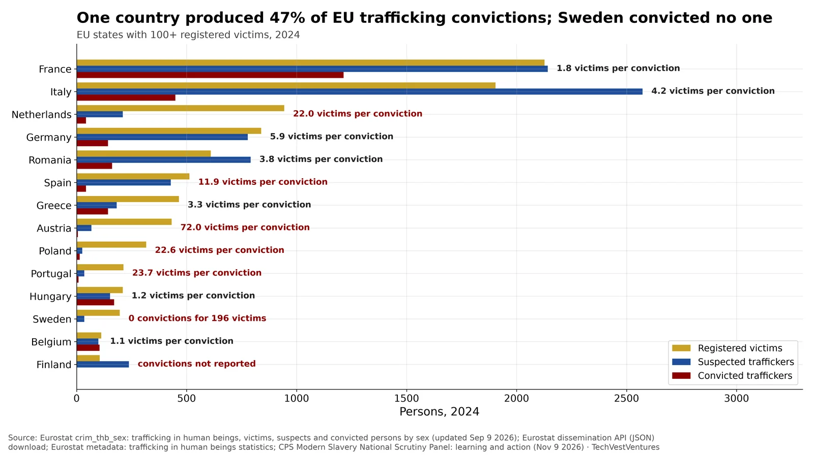

Q11. Prosecutions

Persons registered by police and courts across EU reporting countries for trafficking in human beings, 2008–2024 (Eurostat, published Sep 2026). Suspected traffickers rose from 2,942 in 2013 to 7,966 in 2024 (2.7x), peaking at 9,647 in 2021. Convictions reached 2,601 in 2024 — about one for every 3.1 suspects, versus one per 2.0 in 2013. Registered victims hit a record 10,556 in 2023 and were 9,466 in 2024, 30% above the 2008–2021 average (7,280).
- Convictions per suspect: 49% in 2013, 22% in 2019, 33% in 2024.
- Victims registered per conviction in 2024: 3.6.
- France alone accounted for 1,214 of the 2,601 EU convictions in 2024 (see T8).
Note: EU_V is Eurostat's total of the EU countries that reported each year; country coverage varies (the 2018 conviction figure is low because some large countries did not report). Suspects, convictions and victims in a given year are not the same cases: a conviction can follow a suspicion registered years earlier. Victims are 'registered' (identified or presumed) victims, which depends heavily on national identification systems.
Sources: Eurostat crim_thb_sex: trafficking in human beings, victims, suspects and convicted persons by sex (updated Sep 9 2026) Eurostat dissemination API (JSON) download Eurostat metadata: trafficking in human beings statistics

Registered victims, suspected and convicted traffickers in 2024 for every EU state that registered at least 100 victims (Eurostat, published Sep 2026). France recorded 1,214 convictions — 47% of the EU total of 2,601 — against 2,127 victims. Elsewhere the gap between victims found and traffickers convicted is wide: the Netherlands registered 944 victims and convicted 43 traffickers (22 victims per conviction), Austria 432 victims and 6 convictions, Sweden 196 victims and zero convictions. Italy had the most suspects (2,573) but 449 convictions; Germany 778 suspects and 143 convictions.
- Hungary (171 convictions, 152 suspects) and Greece (143 convictions) also convicted at high rates relative to suspects.
- Poland registered 316 victims and convicted 14; Portugal 213 victims and 9 convictions.
- Outside this EU dataset, the Crown Prosecution Service for England and Wales published its Modern Slavery National Scrutiny Panel 'learning and action' note on Nov 9 2026.
Note: National definitions and counting rules differ: some countries count convictions under trafficking law only, others include related offences; France's high count may partly reflect broader legal coding (for example procuring). Victims, suspects and convictions in the same year are not the same cases. Finland did not report convictions for 2024.
Sources: Eurostat crim_thb_sex: trafficking in human beings, victims, suspects and convicted persons by sex (updated Sep 9 2026) Eurostat dissemination API (JSON) download Eurostat metadata: trafficking in human beings statistics CPS Modern Slavery National Scrutiny Panel: learning and action (Nov 9 2026)